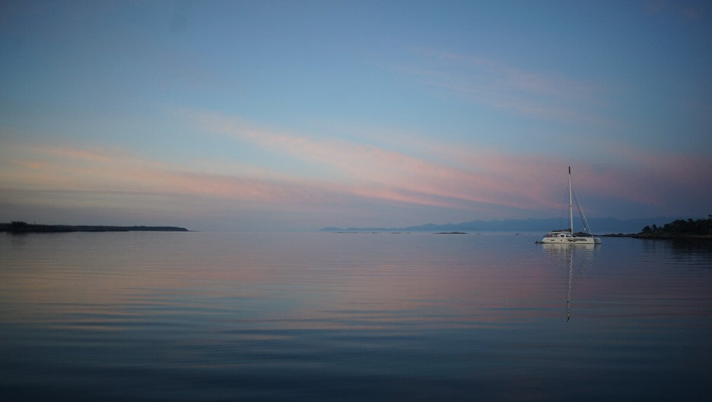

cadboro bay
Note. What we refer to on this page as Cadboro Bay is the traditional, stolen, unceded land of the Songhees, Esquimalt Nations, the WSANEC First Nations, the Cayuse, Umatilla, and Walla Walla Tribes, as well as members of the Te’mexw Treaty Association.
Cadboro Bay is a bay on the southeastern end of Victoria, it houses the Royal Victoria Yacht Club. We stop here once in a while on our way north or south. There is a lot of current around the Discovery Islands, depending on the length of tide cycle and at which time we leave, we do not always have enough time to sail past it before the current turns against us(we bypass it most times, if the currents and winds are right).
The bay is shallow and has good holding in mud, but it is open to the south and to swells from westerly winds. To us it is a utilitarian anchorage. All the most protected spots in the bay are taken up by the RVYC and local moorings to the northwest of the docks. We've often had situations while anchored here where the boat themself is facing west, but the waves hit us broadside out of the southeast, making for a very uncomfortable time at anchor. It is worse when the westerlies stop because it takes a long while for the waves to diminish to nothing.
In the summer the bay is often busy with sailing school boats. Organizers set a lot of buoys in the bay, restricting anchoring if you happen to arrive when they've already been set. They remove the buoys once the courses are finished (note that there are often multiple courses per day, afternoon and evening).
Cadboro Bay is ideal in calm weather, but even if it isn't comfortable it is also fine in strong westerlies or north winds. Avoid this anchorage in strong south weather, especially during southeast storms so your boat doesn't find the shore.